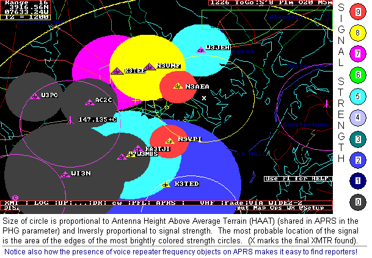

APRS Direction Finding
Bob Bruninga, WB4APR
This page is all about SIGNAL Finding in APRS (much of which was left out of many APRS clones). But these techniques work perfectlly well with-or-without APRS and they work perfectly well without any DF-ing equipment too!. The page is in reverse chronological order, with new experiences added at the top...
DF ALERT 8 Apr 09: Noticed a weak carrier in Annapolis on 144.39. Our section manager WI3N emailed a similar report from K8MSQ. I got on the local repeaters and asked people for signal reports and added them to APRSdos as objects. All I needed was a subjective signal report between 0 and 9, their approximate location, and their antenna height above average terrain. The plot below shows the result. Baltimore is in the center of this 16 mile range-scale map and Annapolis is off screen at the bottom center.

Since most of the reports come in "not heard", that info quickly reveals (by dark gray circles) those areas where the signal cannot possibly be. The lighter colors are weak signal reports and suggested the signal was coming in from the northeast. So we then switched to other voice repeaters to the north to solicit more signal reports. You can see where the full signal reports came in (orange). The size of the circle is proportional to antenna height, and inversly proportional to signal strength, so stronger reports make smaller circles. The color goes from dark grey (nothing heard) to bright orange, strongest. From these overlapping signal strength contours it is easy to see that the probable location of the signal is in the area closest to the edges of the brighter colors. Sure enough, when the stuck transmitter was eventually found, it was at the location X shown on the plot.
Although I used APRS here as my map and plotting resource, none of the reports came in by APRS. Of course, if anyone was monitoring APRS and selected DF-OMNI display, they also would have seen the developing plot above on their APRS maps too in real time. Also, they too could have taken voice reports and added objects to help speed up the process. Anyway, APRS is a very powerful Signal Locator tool if you can just educate ham operators to report signal strength, location and antenna HAAT.
TRANS ATLANTIC BALLOON ALERT: on 21 March 2008, at 2035z I saw an email about a balloon headed for Europe over the east coast with a beacon on 29.449 MHz. Amazingly I heard it very strong and reported it. But also, amazingly, I noticed it dropped by an estimated 12 dB over just the next hour! Using the techniques of simple signal strength observations, this told me that in one hour, it had quadrupled its distance from Annapolis. Below is my attempt at matching my signal strength observations on the predicted path (red) of the balloon:
Since the rate of change of signal strength did not match that estimated track, clearly the balloon had to pass much closer to Annapolis to get that 12 dB signal change in only 1 hour. THe curve that matched the speed and rate of change I observed is shown in Blue. This report gave the balloon owners excellent feedback about position (using signal strength alone).
DF ALERT 16 May 06: A computer voice was being heard on 144.39 in the Wash DC area announcing new stations. The plot below used the APRS Omni-DF-Signal-Reporting technique to localize the transmitter based on verbal signal strength reports obtained from area hams. APRS plots the signal strength reports based on the antenna data (PHG) included in most APRS position or object reports. The map below shows the solution just prior to three mobiles who went searching. Two using only signal strength and the other with a beam.
See an early plot
that quickly localized the area by signal strength alone to be probably SE of DC.
See N3IYI's final S9 location
that gets within a mile or less
See the final location
nailed with IYI's signal, HLV's beam headings and N3MPS's HT sleuthing.
Now back to the normal APRS-DF page:
One of the most useful tactical local tools of APRS is Signal location and Direction finding. Since APRS can locate signal sources based simply on SIGNAL strength, it is far superior than other DF techniques (for instant come-as-you-are use) because everyone can give data, not just the 1% with DF equipment. *And*, EVERYONE with a radio even if they hear NO SIGNAL is contributing VALUABLE info that can be used to rapidly build the big-picture and localize a signal source.
Unfortunately, most of the follow-on clones of APRS did not implement the two original APRSdos OMNI DF techniques which were fundamental to APRS from the beginning. Thus, very few people these days know they exist or use them much... But anyone can still enter a DF report no matter what software they use. See how to Enter a DFS report using UI-view.
Here are screen shots of the APRSdos implementations. Note, these techniques are so powerful and can be entered by ANYONE with only a few keystrokes that everyone should learn how to use them. Both of these APRSdos techniques can be done while driving with only single key presses. Or, depending on your visualization potential, without any PC or APRS at all. They are fully documented in the original APRSdos docs in README\DF.TXT
In fact you dont even need APRS as long as you understand the teqhniques and have a pencil and a map...
..
OMNI DF-ing: The OMNI-DF technique above is based on rapidly getting signal strength reports including "I-dont-hear-anything" from as many people as possible. Only one APRS operator needs to enter this data as objects and then EVERYONE on APRS can see the result. Of course APRS stations already transmitting PHG data can make a report just by chinging one digit in the PHG report from "PHGphgd" to "DFSshgd". The size of all circles is based on PHG (height and gain) and inversely on signal strength. Dark gray circles are areas where the signal IS NOT HEARD. These areas rapidly eliminate areas not involved so that people can focus on getting reports in other areas. Brighter circles show stronger signal strengths and they are smaller to show the reporter is closer to the source. In minutes you can localize a signal to a neighborhood... See Wash DC example. And to see how its done. And see how my quick look guess was wrong!.
DIRECTIVITY: Remember also, that PHG circles can display directivity so be sure to ask users who give you voice reports if there is anything around them that would favor or disfavor one particular direction from their report. APRS PHG circles can display about 6 to 10 dB of directivity to account for terrain.
NON-APRS CONTRIBUTORS: Note also that only ONE person can use the omni-DF technique if he can get voice reports from any other hams in the area. His APRS is just his accounting system for plotting the results of these voice reports. This is fun to do from your hamshack during fox events. Usually, by calling around to various repeaters, you can localize the fox within a mile or so in a few minutes of reports from others...
See more details on this OMNI-DF technique.
See also the frustrations of using this technique.
Or see the full original DF.TXT file.
FADE-CIRCLE TECHNIQUE: The above technique relies on many reports from many radio operators. Many times, you cannot find others to give you data (or even folks who understand what it means to "go listen on the reverse"... In this case, if you are on your own, the FADE circle technique below can allow you to find the signal on your own.

The FADE-CIRCLE technique is a classic technique used by the Civil Air Patrol for rapidly finding a signal using only your omni 2-way radio. All you need is to find 3 places of EQUAL signal strength. In an AIRPLANE with no signal strength meter, this is best found by where the signal fades out. Thus the FADE-CIRCLE name.
But with HAM radio, if you have a signal strength meter, just drive to 3 equal signal points. Initially, you judge equal signals as where the signal just fades in or out. Once you get close, then equal signal points may be where your S meter just starts to be maxed out.. Notice below the difference between the 12 sqmi circle area based on initial signal (or faded-out signal) and the 1/4 sqmi area where the S meter is full scale.. This 50 to 1 dynamic range using just your mobile and it's S meter demonstrates the power of this technique. Then switch to your HT with and without it's antenna for the last several hundred yards and keep homing in. If you are running APRSdos mobile, just a single F5 keystroke marks each point and lets you rapidly keep driving to the next one. Each time you get three points, then hit MAPS-PLOTS-DF-OMNI to let APRS compute the best guess location of the center... then go there and do it again!
Sure this is a crude method, but IT WORKS! You must use your knowledge of radio propogation and local terrain to evaluate the "equality" of equal signal locations, but it DOES work. As you get closer to the source, you simply reduce your gain (or even remove your antenna as you get real close) so that you can still find equal signal strength points while very close...

You dont even need APRS. You dont need anything but a receiver and a map. The above map shows our Club fox hunt. After a 20 minute talk about the Fade Circle technique, members were encouraged to find my HT on their way home from the meeting. Three people found the HT in the dark in only 15 minutes using nothing but their Mobile rigs and HT's. Click here to see another team's solution. You can do one of these after every meeting. Set the HT to 100 milliwatts, hang it on a tree limb by the side of the road. My VX-2R super-tiny HT lasts 2.5+ Hrs with constant PTT. Well long enough to drop off on the way to the meeting for a fox hunt after.
HT-ONLY DF-ing: .
You dont even need a map to use the fade-circle technique. In fact, forget even that name. All you need is your mobile rig and an HT, and you can find anything. Almost as easy as driving right to it (and back and forth a bit). Just visualize signal strength, and always go to the middle of your maximum signal along any line of travel. Then turn 90 degrees and again go to the middle of the signal maximum, turn 90 degrees again, and repeat, and repeat. As signal gets stronger, switch to HT. As signal gets stronger, switch to paper clip antenna and repeat. As signal gets stronger, switch to one INCH piece of paper clip in HT antenna jack and repeat. As signal gets stronger, remove antenna completely and repeat. ETC. Finally, reach out an pick up the transmitter. Done.
To see my use of this technique to find a CRICKET-SAT Balloon payload (433 MHz keychain TX) (found in a field of 8' high corn 8 miles north of launch site), view the following maps in sequence. The relative signal strength is shown by colored dots as I drove (and then walked ) to find the balloon.
IGNORE BLOON-2 POSITION SHOWN. We had NO POSITION INFO. This payload was a 9v battery and key chain transmitter only!. All we knew was that the key-chain transmitter on 433 MHz was last heard approximately NORTH of the launch site. . The BLOON-2 OBJECT was placed on the map when we got out of the car (by temproarily changing my D700's MYCALL). This allerted launch control where we were beginning our foot search.

YOU CAN DO IT. Anyone can, and you don't need any DF equipment. Just your mobile, your HT, and a signal to find! (works at ANY range. Just depends on how much gas you have in the tank, and how far you are willing to walk once you get to HT range.
ANOTHER EXAMPLE: See this photo of the landing site of the full-size APRS balloon the next day. No fair, of course, becuse only the arm-chair kibitzers watching on the internet could see this view. I couldn't!. I was surrounded by summer crops and trees.

Now look at it again, from my perspective. All I know is that the "last posit" heard at 705 feet was somewhere out in this field. Notice the surrounding trees! Sure I had GPS in my car, but the map at this scale was blank other than the road I was on, Oh, also, on impact the GPS begain outputting 0000.00/00000.00 positions! So, here again, I got out the HT...
See the COMPLETE N8PK-11 Tracking Web Page
BEAM HEADINGS: The classic DF technique...
Beam Headings (which can only be done by people with beams or specialized equipment) is the classic DF-ing technique. But Forget It if you need to find something NOW in a come-as-you-are scenario, unless you have everyone planned and ready in advance. MOST people do not have DF equipment, mobiles do not have beams. So it may be more accurate, but it leaves 98% of everyone on the air out of the game. APRS is a come-as-you-are system designed to collect and display data quickly and from every available source. Learn to use it!
QUALITY: Notice carefully the bearing lines in the above example. In APRSdos, the "quality" of the fix is displayed by the "dottedness" of the bearing line. A solid line is a GOOD fix. A very dotted one is the lest trustworthy. The SENDER of a DF bearing line should always indicate his confidence in his bearing line by making sure that he inputs the quality factor in his report. The APRS DF format supports that field. Notice, the more distant stations probably have a weaker signal and in some cases are less confident in their fix... I used a dotted line because it was easy. Better programmers could display this quality by the width of a wedge and fill the wedge with a color density proportional to quality..
LINE LENGTH: Also, the length of the bearing line is automatically adjusted to the scale of the original zoom scale of the sender. Presumably the sender has an idea of the range of his hearing ability and is probably on a map proportional to that area. Hence the bearing line length should be about right. Again, none of the other APRS follow-on clones implemented this very important piece of info. It is rediculous for someone that is within a mile of the signal to be putting out a DF bearing line that is 20 miles long! This just confuses everyone else..
AUTOMATIC DF INTERFACES: ALso, of course, APRSdos supports serial port interfaces to most automatic Doppler DF units. These interfaces make it possible to not only drive almost straight to the signal, but also to share the map display of yours and everyone elses DF data in real time to coordinate an attack... Again, there are so few people with these devices do not expect it to be of much value to your organization except during pre-announced competitative Fox-hunts... But if someone has this equipment, the interfaces are there!
de WB4APR, Bob
{kind=link}
{kind=link}
{kind=link}
{kind=link}
{kind=link}
{kind=link}
{kind=link}
{kind=link}
{kind=link}
{kind=link}
{kind=link}
{kind=link}
{kind=link}
{kind=link}